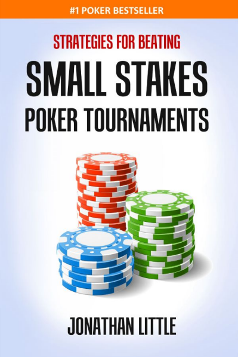

Contents
- Free Bouus Video & PDF
- Introduction
- Focus on your opponents
- The three player types who play small stakes tournaments
- Those who play too many hands
- Those who play too many hands too passively
- Those who play too many hands too aggressively
- Those who play too few hands
- Those who play too few hands too passively
- Those who play too few hands too aggressively
- Those who play roughly the correct amount of hands in an intelligent manner
- Pay attention!
- Specific tendencies you will encounter in small stakes tournaments
- Conclusion
- Resources
Free Bonus Video & PDF
One of most impactful things you can do to immediately improve your tournament strategy is to learn how to increase your levels of aggression. However, it must be done intelligently for it to be effective. The secret is to learn when to play aggressively and when to get out of the way.
To get a free 11-minute video and 24-page PDF from me with tips on how to increase your levels of aggression, visit:
Introduction
There has been a lot written recently, particularly in eBook format, regarding how to beat small stakes poker tournaments. Most books suggest that you either play an overly tight strategy, hoping to trap your opponents who never fold, or an overly loose strategy, hoping to steal lots of pots from your opponents who fold too often. In reality, you should play a strategy that maximally exploits your specific opponents.
I hate to be the bearer of bad news, but there is no silver bullet, as many of these eBooks suggest. Guides that aim to teach you a default set of hands to play from each position are certain to fail you in the long run because each and every time you sit at a poker table, you play against a different set of opponents. For example, if you elect to play an overly tight style, and you employ that strategy against players who will never pay you off when you make a strong hand, you will blind out, guaranteeing failure. If you instead play overly loose, against opponents who play in a manner that traps you, you will spew off your stack. You should not accept the idea that sometimes your strategy will simply fail when you get unlucky to be against the wrong type of opponents.
It is also worth mentioning that you should raise with a drastically different range based on your stack size. Hands such as 4-4 and 9♠-7♠ are excellent when you have a deep stack because of their potential to win a large number of chips if you flop well. However, if you have a 30 big blind stack, they become quite poor, especially from early position, because if you get lucky to flop well, you cannot win enough to justify losing the amount you lose when you don't connect with the flop or when you get reraised and have to fold before the flop.
One of the best things you can do to improve your tournament skills is to learn how to increase your levels aggression. That being said, aggression must be implemented intelligently to be effective. The key to using aggression effectively is knowing when to apply it and when to get out of the way.
To get a free 11-minute video and 24-page PDF from me with tips on how to increase your levels of aggression, visit:
FloatTheTurn.com/increasingaggression
The secret to success in poker is to tailor your playing style to your specific opponents. Playing according to a simple hand chart doesn't work because your opponents are not all playing the same way. Also, you will find that most of these books lay out an overly simplistic strategy for playing after the flop. Again, this will fail miserably because it doesn't account for opponents' tendencies.
As a simple example, suppose you raise with A♠-J♦ to 2.5 big blinds out of your 75 big blind stack from middle position and only the player in the big blind calls. The flop comes J♣-7♦-3♠. Your opponent checks.
Against almost all opponents, you should make a continuation bet of around 3 big blinds, which is roughly 50% of the size of the pot. Let's assume you make that bet and your opponent calls.
The turn is the (J♣-7♦-3♠)-Q♦. Your opponent checks. At this point, your play should vary widely based on your opponent's tendencies. Against tight players who will fold almost all hands worse than yours if you bet, you should check, forcing them to stay in the pot with lots of hands that you crush. Against loose players who never fold any made hand or draw to a turn bet, you should bet to get value from worse made hands and to protect your hand from various river cards that could give your opponent the hand. Let's assume you are against a loose player and you decide to bet 50% of the pot again. Your opponent calls.
The river is the (J♣-7♦-3♠-Q♦)-9♣. Your opponent checks. Your play now depends on how prone your opponent is to call on the river with his marginal hands. If he will call a river bet with an overly wide range of marginal made hands, such as J-8 and A-7, you should make a thin value bet. It is important to bet an amount that is likely to get called by these junky made hands. In this situation, a bet of around 25% of the size of the pot should get called a large portion of the time. If your opponent will usually fold all hands worse than yours besides perhaps J-T and J-8, you should probably check behind because if you get called, it is too likely that you no longer have the best hand.
This simple example shows how mindlessly thinking "I have top pair, so I should bet" does not work. If you were to bet the turn and river in this scenario against a tight opponent, you are almost certainly burning money because he will only call you with a better hand. If you fail to make a thin value bet against a calling station on the river, you are leaving money on the table. If you fail to alter your play based on your opponent's tendencies, you will not win the maximum your winning hands and you will lose more than you should with your losing hands. My goal is to teach you to crush your opponents, not merely win a small amount from them by playing robotically.
As with all of my poker training content, my goal is to teach you to think for yourself, so you will be able to select the best possible play in all situations you encounter for the rest of your poker career. While there are no pre-flop hand charts in this book, which I am sure many of you have come to expect from poker books in your quest to find one that actually works, I provide numerous examples that will give you a solid grasp of how I attack small stakes tournaments. For a more in-depth analysis of my default poker strategies, I strongly suggest you check out my best-selling tournament book series, Secrets of Professional Tournament Poker. You can get the audiobook version of Volume 1 for FREE simply by clicking the link and following the instructions.
Nothing makes me happier than to hear from my students who started off small and grinded their way to the top, as I did many years ago when I deposited $50 onto ParyPoker and rose through the ranks, eventually winning large sums of money and experiencing success in all aspects of life. If I can do it, you can too. I aim to set you on the right path so you do not waste countless hours listening to authors who lay out a flawed formula for you to blindly follow. While some of these simple strategies may have worked 15 years ago when many players were awful at poker, they will not work today because the average player is competent at the game.
During the first few years of my poker career, I played using what was effectively an advanced system. I eventually came to the realization that I was not winning at the highest rate that I thought was possible. While following an intelligently crafted system will likely win you money, it will only win you a little. Playing like a robot in today's games does not produce significant results.
You must realize that if you win at roughly 15% return on investment, which is about the highest rate you can expect to win at by following a mindless strategy, you will break even or lose money after paying the rake. For example, if you normally play $65 live tournaments, and $15 of the buy-in goes to the rake, which is fairly standard in most casinos, a 15% return on your $50 investment means that you will win $7.50 minus the $15 you paid to the rake, making you a $7.50 loser even though you are better than your opponents.
If instead, you achieve a 75% return on investment, which can only be accomplished by getting well out of your comfort zone and blantantly exploiting your opponents' weaknesses, you will quickly progress from the small stakes games to the middle stakes games, where you can start winning serious money. Notice by winning $37.50 per game, even after paying $15 for rake, you profit $22.50 on average. While $22.50 per game may not sound like a lot, if you play well and wing that amount on average every time you play, your bankroll will quickly grow.
Focus on your opponents
In order to win large amounts, you must focus on your opponents. You have to keep your eyes and ears open, actively observing their tendencies. If you only pay attention to your own two cards, your position and your chip stack, you are certain to fail in the long run. Fortunately for you, in the small stakes games, most of your opponents will be oblivious to what you are doing, giving you free reign to do whatever you want.
You must make a point to diligently pay attention the action during each and every hand that takes place at the table. Paying attention only when you are involved in a pot will not give you enough reliable information to get well out of line, which is mandatory if you are to maximize your equity. You have to be mindful while playing poker. If you are mindlessly grinding, you are not playing optimally.
I strongly suggest that you either take mental notes about everything you see your opponents doing, assuming your memory is good, or write notes in a notepad if your memory is bad. Because I recognize and accept that my memory is bad, I write down every hand I play as well as a decent amount of the hands I witness at the poker table. While I occasionally get teased for actually taking the game seriously, I exploit my opponents better than almost anyone. That seems like a fine tradeoff to me!
When taking notes on your opponents, it is especially important to record what each specific player does incorrectly. For example, if you see someone on separate occasions making very small and very large continuation bets on the flop, you should assume that those bet sizes mean something. If you pay attention long enough, you will be able to see a few showdowns and figure out if a particular bet size correlates with a hand of a specific strength.
Once you figure out what your specific opponents is doing incorrectly, you can take steps to exploit his weakness, which is how you will produce a large profit in the long run.
For example, if you know your opponent continuation bets small on the flop with strong hands and large with weak hands, you should fold all of your non-premium made hands to small continuation bets. When facing a large continuation bet, you should raise with your weak hands, forcing your opponent to fold, earning you the pot. With your strong hands, you should call because if you raise, your opponent will fold, making it impossible to extract additional value on the turn and river.
Before moving forward, there is a concept you must grasp if you want to win at any form of poker. If you do not understand this concept, you are certain to fail once you progress beyond the small stakes. Pay attention, this is important!
You must make a point to always think in terms of ranges, meaning you must accept that your opponents will play various hands in a similar manner. For example, if a super-tight player raises from first position, you should not assume he has a specific hand, such as A-K. You should assume he has a range of hands, such as A-A, K-K, Q-Q, J-J and A-K. You can then narrow that range as the hand progresses based on your opponent's actions. Obviously looser players will have much wider ranges on all betting rounds, making them more difficult to play against. There will be more discussion about ranges throughout this book simply because you cannot analyze a poker hand without assigning your opponent a range.
When you have your opponent's range crushed, such as when you have a straight and you think the best hand your opponent can realistically have is one pair, you do NOT want him to fold. You win at poker by making your opponent fold when you are beat and by getting value when you are decently far ahead.
Suppose you raise to 250 out of your 5,000 stack at 50/100 with A♥-T♠ from middle position and only the big blind calls.
The flop comes A♣-7♣-2♦. The pot is 550. Your opponent, who you know nothing about, decides to bet into you for 400.
This is a scenario where if you raise, your opponent will probably only call with a flush draw or a strong made hand, unless he is a calling station who cannot fold any sort of marginal holding. We will assume that is not the case. This means that if you raise and get called, you are either against a draw that has roughly 40% equity (meaning you are not too far ahead) or against what is likely a better made hand (meaning you are way behind). Even though you "probably" have the best hand with your top pair, when you raise your opponent's flop bet and he continues in the pot, you are usually in either marginal or bad shape. Of course, if your opponent decides to reraise, you are in even worse shape.
A much better play is to call, forcing your opponent to stay in the pot with a wide range of hands that you crush, including A♦-5♣ and 8♦-7♦. While you will occasionally get outdrawn, you will also extract huge amounts of value by giving your opponent a chance to make mistakes on the turn and river. Notice that your opponent may think his A♦-5♣ is the best hand and continue betting on the turn and river for value because he may assume you would always raise with a better hand on the flop. He could also have total air, such as K♣-5♦, and decide to continue bluffing because he knows you can't have the nut flush draw or simply because he feels like running a bluff. By raising the flop and forcing your opponent to fold his hands that are drawing thin, you force him to play perfectly. You make money by exploiting your opponent's errors, not by inducing him to play well.s
The three player types who play small stakes tournaments
There are primarily three types of players who play small stakes tournaments. There are those who play too many hands, those who play too few hands and those who play roughly the correct amount of hands in an intelligent manner. While many of these players have similar traits, they all have distinguishing characteristics that allow you to syphon away their money, assuming you are paying attention and adjusting intelligently.
Those who play too many hands
While players who play too many hands come in numerous varieties, you can generally break this category of players down into those who play too many hands too passively and those who play too many hands too aggressively. Each player type must be looked at separately because you exploit them in drastically different ways.
Those who play too many hands too passively
The main type of player you will encounter in small stakes poker tournaments are those who play too many hands too passively. These players frequently limp in and call raises with a wide range of marginal hands, hoping to connect well with the flop.
It is important to realize that these players usually have marginal hands when they act in a passive manner because they almost always raise and reraise with their premium hands.
Just because someone is active does not mean they are aggressive. It is quite easy to be involved in many pots while still only investing significant money with premium hands. That is exactly what these players do. They try to make a premium post-flop hand cheaply before investing a lot of money. Of course, the type of hand that each specific player perceives as strong varies quite a bit. Some will only want to put a lot of money in the pot with the nuts and others will blast their stack in with any junky top pair. As stated earlier, you must pay attention to your opponents so you can develop a plan for how you should exploit them. It is impossible to develop a sound plan if you have no clue what your opponents are doing.
You beat this type of player by assuming they play straightforwardly. Of course, they will bluff you from time to time, but you will usually make the right decision if you assume they are playing in a face-up manner.
When this type of player calls your bets, you should tent to assume they have marginal made hands. This should lead you to value bet relentlessly, especially with hands that have their calling range crushed. Whenever you have a decent top pair or better, you should almost always continue value betting. Always be sure to size your bets such that your opponent can realistically call with worse made hands.
When this type of player decides to apply pressure, you should tend to get out of the way unless you have a premium holding that is in good shape against their betting/raising range. If you know your opponent is betting and raising with mostly nut and near-nut hands, it is tough to be ahead of that range! Do not fall into the habit of paying these players off with strong, but crushed holdings, such as top pair.
For example, suppose you raise to 3 big blinds with K♦-Q♠ out of your 100 big blind stack and a loose, passive player calls on the button. The flop comes K♣-T♥-7♦. You should usually make a continuation bet of around 4 big blinds. If your opponent calls, you should usually bet again on most turns. Suppose the turn is the (K♣-T♥-7♦)-6♣. You should bet around 7 big blinds. If your opponent calls, you can assume he has a worse K, a T or a draw. If he raises, you can confidently fold, assuming he has you beat with some sort of two pair or set that he decided to slow play on the flop. This turn bet allows you to extract value when you are ahead while also getting relatively accurate information that will let you know when you are crushed.
Assuming the river is a reasonably safe card (any card besides an A, J or 9) you should make a fairly small value bet of around 10 big blinds, or 33% of the size of the pot. You are making this bet with the assumption that your opponent will fold all of his missed draws, call with all of his one pair hands and either call or raise with hands that are better than yours. While the T may appear to be a scary river card because it improves middle pair into trips, you should not automatically assume that your opponent has exactly the one hand that beats yours. Of course, if your opponent raises your river value bet, unless you have some sort of read that lets you know with a high degree of certainty that he is bluffing, you should fold.
It is important to realize that when you value bet on some of these rivers, such as T, 9, 8, 7, 6 or 5, you could have the worst hand. However, you will find that your opponent will call your small bet often enough with a losing hand to justify making the value bet. When value betting, your bet needs to get called by a worse hand at least 50% of the time to make the bet profitable. In this scenario, it almost certainly will succeed at least 50% of the time. That being said, if you know your opponent only calls river bets with premium hands, you should strongly consider checking with the intention of calling if your opponent bets on these marginal rivers.
If the river is a bad card(an A, J or 9), you should usually check and see what your opponent does. If he bets, you should vary your play between calling and folding, depending on your opponent's specific tendencies, although folding is usually the intelligent play. Whenever the river is great for your opponent's range and bad for your hand, if your passive opponent bets, you should usually assume he improved to a hand that crushes yours.
Notice that if you bet significantly larger, perhaps around 75% of the size of the pot, which is what most non-thinking players do, your opponent will fold most of his one pair hands, meaning he will usually only call when you are beat. By making a large bet, you force your opponent to play well, which is a disaster for you. Remember, you don't want to make it easy for your opponent to play well.
You will often find that some of these players will call on the flop
and the turn with a wide range, hoping to either find out
where they are at by the river
or improve their junky holdings,
such as A high or bottom pair, into a strong hand. Against these
players, you should be very prone to make river bluffs, especially
if you know that your opponent will raise on an earlier betting
round with his premium holdings, meaning when hen calls your flop
and turn bet, he usually has a marginal made hand that he will fold
to a sizable bet.
Against these players, you should usually make your river bets a bit larger than in the previous example because you are trying to make your opponent fold most of his marginal hands. The last thing you want is to bet small on the river with a bluff and have your opponent call with bottom pair.
For example, suppose you raise to 2.5 big blinds out of your 75 big blind stack with Q♠-J♠. A player who you know likes to stick around until the river with a wide range calls on the button. The flop comes K♠-9♦-3♣. You bet 3.5 big blinds and your opponent calls. The turn is the (K♠-9♦-3♣)-5♠. You bet 5 big blinds and your opponent calls. The river is the (K♠-9♦-3♣-5♠)-7♥. Should you bet or check? If you decide to bet, how much should you bet?
Seeing how you lose to almost all hands and your opponent could realistically fold a 9, 3, A or marginal pocket pair if you bet, you should make a somewhat sizable bet of around 15 big blinds, or 65% of the size of the pot. This will force your opponent to put in a significant amount of his stack to make a hero call that will only win if you are bluffing. Of course, if you are known to be a habitual bluffer, you should be more prone to give up when you miss. On the other hand, if you are known to be a tight player, you should certainly bluff. Always be sure to factor in the way your opponent perceives you before making any bet.
Interestingly, if you improve to a straight or flush on the river, you should bet for value. Since you expect your opponent to fold to a large bet, you should make a smaller bet of around 40% of the size of the pot. If you improve to middle pair, you should also make a 40% pot bet for value because you expect most of your opponent's range to be worse than your middle pair.
This is an example of playing a blatantly exploitable strategy, which means that if your opponent knows what you are doing, he can crush you. If he knows that you are bluffing when you bet 65% pot, he can simply call with this entire range of made hands and raise with all of his trash. When you bet 40% pot, he can fold all of his marginal made hands. Clearly, if your opponent knows what you are doing, you have a major problem.
However, you will rarely stumble into this exact situation too often. You will find that you rarely make it ti the river and when you do, your opponents will not be paying too much attention to your exact bet sizes. Most small stakes players don't pay attention to what is going on at the table when they aren't involved in the pot, which is one of the main reasons why most of them never progress beyond the samll stakes games.
If you play with the same group of strong players on a regular basis, you should tend to make bets that are unexploitable, or at least much more difficult to exploit. This means that you should make bets of the same size with all of your hands, whether they are strong or weak. In the previous situation, you should tend to make the 65% pot bet because most of the time, you will want this type of player to fold on the river. In general, you want to figure out the result you want most of the time and tailor your bet size to achieve that result.
Some players of this type will display obvious bet sizing tells, meaning they make a specific bet size with their strong hands and a vastly different bet size with their weak hands. For example, they may bet 1/3 pot with their middle and bottom pair hands and 2/3 pot with their top pair or better hands. Others will raise or check-raise with top pair or better while calling with their worse made hands. Whatever they do, try to figure out what their bet sizes mean and act accordingly until you have a reason to believe that they have altered their betting patterns, which will likely never happen. Once you figure out what your opponents are doing incorrectly, you can adjust your strategy to exploit them.
Those who play too many hands too aggressively
This type of player is similar to the previous type of player in that they play a wide range of hands and see a lot of flops. However, they tend to do so in an aggressive manner, which makes them much more difficult to play against than their passive counterparts. Instead of being able to assume these players play in an almost blatantly face-up manner, you have to assume they are bluffing at least some percentage of the time. This makes it much more difficult to accurately assess their ranges.
These players act in an aggressive manner because they have learned that most of their opponents play in a straightforward manner. They also know that most of their opponents will not want to call multiple bets without a premium holding. This leads them to bet whenever they sense weakness, which is primarily when their opponents check. Against the average player in small stakes tournaments, this is an excellent strategy to apply. These players are usually winners in the small stakes games although they will get crushed once they move up and face players who know how to combat them.
You can beat this type of player in a few ways. The primary way ti beat them is to induce them to try to bluff you. Of course, if you induce your opponent to try to bluff you, you should not fold whatever you have unless the board runs out as poorly for you as possible, which shouldn't happen too often if you choose your spots well.
The most obvious way to induce an opponent to bluff into you is to check as if you have a weak hand and are going to concede the pot. For example, suppose you raise to 2.5 big blinds out of your 50 big blind stack with A♥-T♠ from middle position and an aggressive players who play too many hands calls on the button.
The flop comes A♠-7♣-4♥. You make a standard
continuation bet of 3.5 big blinds and your opponent calls. On most
turns, you should strongly consider checking instead of betting for
value. While this is often referred to as controlling the pot
,
you are actually inducing a bluff against this type of player
because you should expect him to fold most of his marginal hands if
you bet. However, he will usually bet if you check. By checking, you
get him to put much more money in the pot compared to when you
check, which is exactly what you want to happen when you probably
have the best hand.
The turn is the (A♠-7♣-4♥)-9♠. You check and your opponent bets 8 big blinds into the 13 big blind pot. This is a scenario where lots of amateur players elect to check-raise, trying to force their opponent to fold all of their draws. While your opponent will probably fold his draws, he will also fold all of the hands that you crush, such as A-2, 8-7, 4-3 and K-J. Instead of check-raising, you should check-call with the intention of check-calling all rivers.
When you call your opponent's turn bet, don't look overly happy or act in a fast manner as if calling is the only option that makes sense. That could tip your opponent off to the fact that you have a strong holding. Instead, act as if you have a tough decision with a hand such as J-J or 8-7. Remember, you want your opponent to bet again on the river.
While you will get outdrawn roughly 15% of the time when you play
your hand in this manner, you will find that most of your aggressive
opponents cannot resist the opportunity to try to push you off your
obviously
weak hand. When you show up with top pair on the
river, most of them will be shocked, thinking that the only way to
play top pair is to bet it for value and protection on all three
streets. By checking, you will crush these opponents.
Notice that in this example, there are not too many bad turn and river cards for you. While an 8 or 3 would complete the most likely straight draw, the other cards are fairly safe. If instead of A-T on A-8-5 you had A-T on T-9-6, you should be much more inclined to bet for value and protection on the turn because there are numerous cards that could come that could easily give your opponent the best hand. Always try to think about how the hand will play out if you take each possible betting line. If the board could easily run out terribly for you, you should probably bet for value and protection. If the board will usually run out decently well for your hand and your opponent will play in an aggressive manner with a wide range if you check, you should check to induce a bluff.
While it may seem like checking is the only way to induce a bluff, you can also bet into some of your aggressive opponents and induce a bluff. For example, suppose a player who plays too many hands in an aggressive manner raises to 2.5 big blinds out of his 50 big blind stack from middle position and you call from the big blind with 3♠-3♦.
The flop comes J♠-6♦-3♣. While going for a check-raise is a fine play, betting into your opponent is also a good option against this type of player. If you check-raise, or even check-call, your opponent will know that you at least have something. However, especially if you have an aggressive dynamic with your opponent, if you bet into him for around 3.5 big blinds, he may think that you are trying to push him off his hand, which he probably knows should not be too strong on this board. He may decide to represent a J or he may simply think you cannot withstand immense pressure, resulting in him either raising the flop or calling the flop and then taking an aggressive action on the turn.
So, you lead for 3.5 big blinds and your opponent raises to 9 big blinds. At this point, you should go into call-down mode. You do not want to let your opponent think that you have a premium hand by reraising. You also don't want him to fold because most of his range is drawing nearly dead. Of course, he will outdraw you occasionally when he improves to a straight, but that is a risk you must be willing to take if you want to maximize your expectation from your premium holding.
On the turn, you should again check-call with the intention of check-calling the river, giving your opponent the maximum number of opportunities to spew off his chips. If he checks behind on the turn, he either has nothing, which will not call a river bet, or a marginal made hand. If you check the river, if he has J, he will probably bet for value and if he has worse than an J, he probably won't call if you bet, assuming you have some sort of strong hand that can beat middle pair. So, if the turn checks through, you should check the river.
Interestingly, if you check the river and your opponent bets, depending on the turn and river card, you may want to only check-call because you could be beat and most opponents will assume that you must have a premium hand to check-raise the river. This means that your opponent will probably only call a check-raise on coordinated boards with overly premium hands, most of which you lose to. For example, if the board runs out J♠-6♦-3♣-8♠-9♠, you should check-call. If it runs out J♠-6♦-3♣-T♦-A♣, you should usually check-raise.
Another way you can induce an aggressive player to bluff is by making a tiny bet into your opponent that looks like a classic blocking bet. A blocking bet is a small bet placed with a marginal made hand, usually on the river, to induce your opponent into calling with his strong hands while making it difficult for him to bluff. Using blocking bets in this manner is almost always a bad idea in today's games because most players will play well against them.
However, if you know your opponent is an overly aggressive player who will attack any sign of weakness, turning the concept of a blocking bet on its head is an excellent idea. Suppose one of these players raises to 2.5 big blinds out of his 100 big blind stack from middle position, the Button calls you call with A♥-3♥ from the big blind.
The flop comes A♠-7♣-6♣. You check, the initial raiser bets 5 big blinds, the Button folds and you call. The turn is the (A♠-7♣-6♣)-2♦. Both players check. The river is the (A♠-7♣-6♣-2♦)-J♠. This is an excellent spot to make a tiny bet of around 2.5 big blinds into the 18 big blind pot because your aggressive opponent probably doesn't have an A because he checked behind on the turn. This bet will result in your opponent calling with any sort of made hand, which is an excellent result, and either folding or raising with his absolute junk. If he folds, he will become suspicious that you bluffed him, perhaps allowing you to get unwarranted action on future hands. If he raises, you can happily call because you know that in his eyes, you look as if you have a weak made hand and are trying to get to a cheap showdown.
It is important to size your river bet to induce your opponent into doing what you want him to do. If you bet 7 big blinds on the river instead of 2.5, your opponent will almost never raise as a bluff, which is what you are trying to induce. Instead, your opponent will call with all of his reasonably strong made hands and fold everything else. A large bet leads to much worse results for you compared to the tiny bet. Always try to quantify what your opponent will do when facing bets of all sizes then pick the one that works out best for you.
The other main way to take advantage of this type of player is by bluffing them when the board is good for your range and bad for their range. You have to realize that this type of player plays a wide range of hands, meaning they could have anything. Even though they could conceivably connect with many more flops than a tight player, around 2/3 of the time this type of player will miss the flop. This should lead you to attack their continuation bets fairly often, especially when you should have a strong range.
For example, suppose one of these players raises to 2.5 big blinds out of his 50 big blind stack from early position, the Cutoff calls and you call with A♠-J♦ from the big blind. It is worth noting that it is usually wise to call when you are out of position with hands that play reasonably well after the flop. Most amateur players reraise with decent high card hands like A-J and K-Q because they are usually best at the moment. Especially when you are out of position, this is usually not a good enough reason to justify bloating the pot.
The flop comes 8♠-7♠-4♣. You check, the initial raiser bets 4 big blinds and the Cutoff folds. This is an excellent spot to check-raise to around 11 big blinds with a wide range of premium made hands, draws and the occasional bluff. Anytime you have the backdoor nut flush draw, which you have with the A♠, you should at least consider bluffing. Even if you didn't have the A♠, you should bluff in this situation from time to time because it is so easy for you to have a strong hand while at the same time, it is so difficult for your opponent to have a strong hand. Even if he has A-A, he cannot be thrilled to pile money into the pot because he could be against a straight, set or straight flush draw. Whenever you can put your opponent in a terrible spot with the top of his range, especially if your opponent thinks you are relatively tight and straightforward, you should do it.
If your opponent happens to call your flop check-raise, you should usually continue betting if the turn is a spade(♠)Q, J, T, 9, 8, 6 or 5. By betting you can easily represent that you either had the nuts on the flop and are still happy with your hand or that you have improved to a premium hand on the turn. You do not need to bet too large on the turn because if you happened to have the nuts instead if a bluff, you would easily be able to go all-in by the river by making a small turn bet. Notice if you had the nuts, you would not want to let your opponent off the hook on the turn by betting too large. So, bet around 12 big blinds out of your 36.5 big blind stack into the 32 big blind pot.
If your opponent decides to call your turn bet, you will have a tough spot on the river. You should tend to bet again inly if you think your opponent will fold most of his range. If your opponent is a calling station, someone who rarely folds any sort of made hand, you should not have bluffed in this situation to begin with. Always remember to pick your spots well and only run bluffs when there is a reasonably high likelihood of success.
Those who play too few hands
While players who play too few hands come in numerous varieties, you can generally break this category of players down into those who play too few hands too passively and those who play too few hands too aggressively.
Those who play too few hands too passively
This type of player rarely puts a chip in the pot, especially after flop, without what they perceive to be clearly the best hand. You will find that these players are deathly afraid of losing their entire stack. Some of them will even fold super-strong hands, such as A-K on K-8-6-2, if you apply enough pressure. That being said, some of these players will never fold hands they think are strong. They assume that since they rarely enter the pot, they have to win almost every hand they play. Be sure to pay attention to your specific opponent and quantify exactly which mistakes he is making. Trying to bluff someone who is unbluffable is a devastating mistake.
These players usually do not defend their blinds well, especially if you raise and then make a post-flop cotinuation bet. They refuse to continue after flop without at least a pair. If they check-call, they usually hae top pair or worse. They typically make your decisions easy by check-raising with hands that are better than top pair, allowing you to easily fold when you are beat. If you are lucky enough to find one of these players who will check-call the flop with middle pair and worse but check-raise with top pair and better, you can fire the turn every time your opponent check-calls the flop, allowing you to steal the pot whenenver your opponent does't improve to trips or two pair.
Most of these players think that the goal of a poker tournament is to get in the money, locking up a min-cash. This mindset is the exact opposite of what you should have. While getting in the money is nice, the real goal is to finish in the top three spots, winning a large number of buy-ins. If you min-cash in a 120 person tournament of 30% of the time and lose all of the rest of them, you will lose money in the long run. However, if you win 4% of the time and lose the rest of them, you will win a ton of money. If you want to succeed at poker, you must embrace the fact that you will experience large swings to your bankroll.
There are lots of ways to crush this type of opponent, mostly by taking advantage of the fact that will fold too often. You will find that most of these players are quick to fold when facing a pre-flop raise when they are in the blinds. If they happen to call pre-flop, they will usually fold to a post-flop continuation bet.
If one of these players is in the big blind and the players between you and the big blind are not too wild, especially if you have a reasonably tight image, from middle or late position, you should raise to roughly 2.5 big blinds with a wide range, hoping to steal the blinds. For example, from middle position, hands such as A♠-4♦, K♦-9♠ and 8♠-5&spades should usually be folded if the players yet to act play reasonably well. However, if they are mostly tight and passive, you should happily raise, expecting to steal the blinds most of the time. If one of your opponents decides to reraise, you should fold because your hand is certainly crushed by their range.
From late position, your raising range should be even wider. Taken to the extreme, if you are on the button and both players in the blinds are overly tight passive, you can raise with any two cards. In general though, from any position, you should not fret about folding the absolute worst hands, such as 9-4, 7-3 and 5-2. It is good for your image to show your opponents that you can fold from the button from time to time. People usually don't mind if you steal a decent amount, but if you steal every single time, they will start to become aware of your strategy.
If you raise with a junky hand and one of the tight, passive players calls, you should almost always make a continuation bet of around 40% of the size of the pot, which will be around 2.5 or 3 big blinds. This will give you an excellent prive on your bluff while still getting your opponent to fold almost every time he fails to improve on the flop. If your opponent calls your flop bet, unless you have a strong hand, you should tend to give up.
If you raise pre-flop and get multiple callers, you should usually play in a straightforward manner, betting when you have something decent and getting out of the way when you miss.Since most of these players really want to get in the money, you should look to exploit them late in the tournament whenever you are approaching a payout jump. Do not be afraid to reraise them with a decently wide range, especially when they make a raise from late position, where they could conceivably be stealing.
For example, suppose you are almost in the money and one of these players raises to 3 big blinds out of his 40 big blind stack from the button. You are in the small blind with K♠-4♠. This is an excellent spot to at least consider reraising to around 8.5 big blinds. If your opponent 4-bets to perhaps 17 big blinds or all-in, you can easily fold because you are certainly in awful shape. If he calls, you can bet 8.5 big blinds on the flop and usually steal the pot. Of course, if your opponent continues to the turn, you should give up unless you have an overly strong holding because in order for your opponent to call your flop bet, he should have a strong hand that he is willing to put his stack in with.
That being said, do not get too wild against this type of player. Especially when there is a ton of money on the line, some of these players will only enter the pot with hands that they do not plan on folding to any amount of aggression. These players may be so tight that they will not even consider stealing the blinds from late position. Instead, they patiently wait for A-A, K-K, Q-Q, J-J, T-T, 9-9, A-K or A-Q and then try to got their stack in.
You crush players who play this tight by folding. This may sound conterintuitive, but every time you do not give these players actio when they have a premium hand, you save a ton of money. Coupled with stealing their blinds relentlessly, they will slowly get ground down, losing roughly .6 big blinds per orbit.
That .6 big blinds per orbit numbers comes from the fact that these players will play around one in 12 hands that they are dealt. If you never give them action without an equally premium hand, they will win the blinds once every 12 on average while forfeiting their blinds once every nine hands.
For example, at 500/1,000-100, it costs 2,400 to play each orbit, which works out to, on average, 267 chips per hand. If a tight player successfully steals 2,400 once every 12 hands, he will steal 200 chips per steal attempt on average. This will result in him losing 67 chips per hand, or 603 chips per orbit. Using this strategey, if he has a resonable stack of 25,000 chips, he will lose 25% of his stack only 93 hands. As the blinds contunue to increase, his stack will diminish even faster.
This is why most of these players are decently good at getting in the money before the blinds get too high but terrible at winning the tournament once the blinds get big, which in turn makes them terrible at winning money in poker tournaments. While it is not too costly to only play premium hands when the blinds are small compared to your stack, as the blinds increase, losing .6 big blinds per orbit is a disaster.
This is why you see lots of excellent players implementing a snug strategy early in the tournament but an almost maniacal strategy once the blinds get high. When the pre-flop pots become significant, you simply must fight for them, especially if your opponents will let you run them over. If you don't, you are certain to lose money in the long run.
Of course, the math is not quite that simple because these players will occasionally get action whenever their opponents play poorly by getting involved with vastly inferior hands. Notice they will effectively break even in situations where two players both have premium hands because all players will get the same amount of premium hands in the long run. If you know a guy is only entering the pot with premium hands, especially once the stacks get short, refuse to give him action unless you also have a premium hand. You don't have to enter the pot simply because your hand is normally playable against the average opponent.
For example, suppose a player who plays too few hands too passively raises to 2 big blinds out of his 28 big blind stack from second position. You have A-Q in middle position. You should easily fold. While this may sound incredibly tight to some readers, you must realize that A-Q is in marginal shape, at best, against this player's likely strong raising range. In fact, you should even consider folding decent pairs such as 9-9 in this situation.
Not only do you have to worry about the initial raiser, but you also have to take into account the players yet to act, who will each pick up a premium hand around 3% of the time. Even though hands such as A-Q and 9-9 are normally quite playable, they could easily be crushed by this player's early position raising range. Therefore, you don't want to reraise, and calling will lead to situations where you are frequently dominated post-flop. You should fold and wait for a better spot.
If you fail to pay off the tight, passive players, you will slowly grind them down in the long run. Do not impatiently donate your stack to them.
Those who play too few hands too aggressively
This is the second most common player type, after those who play too many hands too passively, that you will encounter in small stakes poker tournaments.
These players have usually studied a few of the older poker books that say that tight is right
.
These older poker books suggest waiting around for a strong hand before applying extreme pressure, hoping to either win the pot with no contest
(which is not actually a good result; when you have best hand, you want to get value) or get all-in with what should be the best hand
(but often isn't when a ton of money goes into the pot).
Clearly these players have huge holes in their games that you can exploit.
These players tend to vastly overplay marginal made hands such as top pair and overpairs. When they make a hand they think is strong, they want to pile their stack into the pot as fast as possible before the board gets too scary. It is not uncommon to see these players raise to 3 big blinds out of their 100 big blind stack with a hand such as A-Q, get one caller from the blinds and flop Q-9-4. They then continuation bet 5 big blinds and face a check-raise to 13 big blinds. Instead of considering their opponent's check-raising range, they hastily either reraise small to 30 big blinds with the intention of getting all-in on the turn or simply push all-in on the flop. They are usually shocked when their opponent shows them either a set of Q-9. Instead of taking time to realize that they played their hand poorly, they curse the poker gods for their bad luck.
By blasting their stacks in whenever they have a strong hand, they give their opponents huge implied odds.
They are simply not capable of folding strong
hands that are fairly difficult to make.
Obviously if you are crushed by your opponent's range, which should be quite strong if they recognize you are a tight, aggressive player,
you should fold all but your absolute best hands when a lot of money goes into the pot.
You can easily beat this type of player by playing against them primarily with overly premium hands, such as K-K and A-K and hands that have huge implied odds, such as 3-3, a♠-3♠ and 8$diams;-7&diamsl. You want to play the premium hands because they have even a tight range crushed and you want to play the implied odds hands because you frequently get paid off whenever you improve to a strong post-flop hand. Of course, if the stacks are shallow, the implied odds hands lose a lot of value because you will not be able to win too much, even when you hit.
You want to make a point to avoid hands that are easily dominated against this type of opponent. A♣-9♦ and K♦-T♣ are particularly bad because it is relatively easy to make a strong, but dominated hand, such as with K-T on K-7-3. The last thing you want to do is play hands that frequently either lose large pots or win small ones. When facing a raise from a tight, aggressive player, unless your hand is almost certainly ahead or has s ton of post-flop potential, simply fold ans wait for a better spot.
If you happen to find yourself in a situation where you have a decently strong, but not amazing, post-flop hand, make a point to not lose your entire stack when your tight, aggressive opponent clearly wants to put a lot of chips in the pot. For example, suppose a player who plays too many hands too aggressively raises to 1,000 at 200/400-50 from middle position out of his 20,000 stack. You decide to call on th button with K♣-Q&clubs. The blinds fold. It is worth noting that you should almost never reraise with this hand before the flop against this type of player.
The flop comes (K♦-7♣-2♠). Your opponent bets 1,500 and you call. Folding would be too tight as you could easily be against numerous worse hands such as T-T and A-Q.
The turn is the (K♦-7♣-2♠)-9♦. Your opponent bets 2,600. At this point, you should be concerned that you could have the worst hand. While you could make a case for folding against the tightest players who only continue betting on the turn with the top pair, top kicker and better made hands, you should usually call one more time to see what develops on the river.
It is mandatory that you formulate a plan for the river before you call on the turn. If your opponent bets a third time, you should probably fold, giving him credit for K-J or better. Of course, you beat K-J, but you lose to everything else. Sometimes your opponent will accidently turn a worse made hand into a bluff. Don't let that bother you. Most of the time when you will be crushed.
If your opponent checks on the river, you should probably check behind unless you are confident your opponent would bet with A-K and better, meaning his checking range consist entirely of hands that you beat.
So, the river is the (K♦-7♣-2♠-9♦)-4♣. Your opponent bets 5,500. Sticking with the plan, you should fold. While you may have the best hand some small percentage of the time, you are almost certainly beat. Remember, a penny saved is a penny earned!
Be aware that you should almost never make this fold versus a loose player who is prone to betting with a much wider range, either for value or as a bluff. You should also not fold versus players who vastly overvalue strong pre-flop hands that failed to improve after the flop, such as J-J or A-Q on the (K♦-7♣-2♠-9♦)-4♣ board. Always take your opponent's tendencies into consideration.
Since these players tend to be a bit too tight before the flop, you can slowly grind them down by stealing blinds whenever you find an opportunity. Do not be afraid to attack their blinds even from early or middle position, especially if the players between you and the blinds are relatively tight.
Suppose everyone folds to you in the cutoff and you look down at 8♠-4♣. The effective stack size is 40 big blinds. The Button, Small Blind and Big Blind are all players who play too few hands. You should strongly consider raising to around 2.3 big blinds. If you get reraised, you should fold. If one player calls, you should almost always make a 2.5 big blind continuation bet on the flop. If multiple players call, you should usually play i a straightforward manner after the flop. Remember, your goal is to steal the blinds. When you face too much resistance, don't be afraid to get out of the way. Of course, if the Button, Small Blind and Big Blind don't like to fold before the flop, you should easily fold your awful 8-4.
Similarly to how you should combat tight, passive opponents and loose, passive opponents, when a tight, aggressive player decides to reraise before the flop or apply significant pressure after the flop, unless you are getting huge implied odds with a hand that has a decent chance to improve, you should fold. Remember, you win a huge amount of equity by staying out of trouble when your opponent's range has you crushed.
For example, you raise from the Hijack seat to 2.3 big blinds out of your of your 35 big blind stack with A♦-J♣ The Button, a tight player who plays his strong hands too aggressively, decides to reraise to 7 big blinds. This is situation where you should make an easy fold. You are usually dominated and when you aren't, you have to play a tricky hand out of position that will fail to connect with the flop 2/3 of the time. While going all-in would be an option against a loose, aggressive player, against a tight player, it is not a good idea because your opponent will play perfectly, calling with his hands that beat you and folding those that don't.
While the reraiser in this example could easily exploit you by reraising with a much wider range, you can rest assured that most of these players will rarely get out of line. They have been taught to reraise with their strong hands and fold everything else. Thiose are their rules and they are sticking to them. Of course, if you notice that your opponent is constantly reraising you despite your assumption that he should be playing a snug range, you may need to reassess your read and start fighting back.
Those who play roughly the correct amount of hands in an intelligent manner
While these players tend to quickly move up from the small stakes games to larger buy-in games where they can win more money, all good players must start somewhere. These players tend to be on the tighter side while being capable of running well-timed post-flop bluffs and getting away from hands that are reasonably strong, but obviously crushed. One sigh of a strong player is that they usually win a lot of small pots, especially on the turn and the river without a showdown, while at the same time, rarely playing a large pot without a premium holding.
One of the main ways to beat this type of player is by applying significant pressure in intelligent spots where your range should be stronger than your opponent's. For example, suppose one of these players raises from early position and you call on the button. If the flop comes 8♣-7♠-6♦ and your opponent bets, this is an excellent spot to raise with an overly wide range because the board should be much better for your range than your opponent's.
Especially in the small stakes games, many of these players are well versed in the idea of betting for value with a reasonably wide value range with the intention of folding if raised. Use their dependence on this play against them. Suppose one of these players raises from middle position and you call in the big blind with 9♠-7♠. The flop comes A♦-9♥-6♥. You check, your opponent bets and you call. The turn is the (A♦-9♥-6♥)-T♣. You check and your opponent bets again. Seeing how you almost certainly have the worst hand at the moment, calling is not a good idea. However, you could check-raise as a semi-bluff, assuming the stacks are deep enough that you have some fold equity. If you know that your opponent would value bet any A on the turn with the intention of folding if he gets raised, you should check-raise with a wide range of hands that are not quite good enough to continue check-calling with.
Another way to exploit these players is by folding when it is clear they want to put lot of money in the pot. Assuming you know that your specific opponent rarely attempts somewhat wild flop and turn check-raises, if he check-raises you, do not be afraid to make a big fold. Of course, if your opponent is somewhat wild after the flop, you should be a bit more prone to see a showdown.
While trying to exploit every player you encounter is a good idea, it is usually a good idea to avoid strong players and focus your attention on crushing the weak players, who are easily exploitable. Remember, you win money at poker because your opponents make mistakes. If your opponents do not make many mistakes, you will not win much of their money.
Assuming you are one of these strong players, which you either currently are or are working to become, you must be keenly aware of how opponents view you. Remember, each specific opponent will have his own perception about you. Perhaps you won a big pot with no showdown against a player who may now think you are capable of bluffing. Even though you have have won the pot with a legitmately strong hand, he will be suspicious. Maybe another guy at the same table lost a sizable pot to you when you called his bluff with middle pair. He may think you are a calling station. Perhaps you have folded your big blind to the same player's pre-flop raise a few orbits in a row because you had trashy cards. He may think you are overly tight in the blinds. It is important to realize that the way your opponents perceive you is based on what they see, not what you see. You have to look at the world from your opponent's point of view. You will find that this is initially a difficult thing to do, but if you constantly practice, you will get better at it over time.
If your opponent expects you to be tight, you should bluff more often. If you have played very few hands recently, feel free to get well out of line and play a marginal hand as if it is the nuts. Suppose you have been somewhat tight recently and decide to raise from middle position with A-4 to 2 big blinds out of your 50 big blind stack. A loose, aggressive player who loves to reraise reraises you to 5 big blinds from the button. This is an excellent spot to reraise to around 11.5 big blinds. It will put the Button in a difficult spot with most of his non-premium range because it looks as if you are willing to get your entire stack in. Of course, if the Button decides to put his stack in despite your aggression, you should get out of the way. You must accept that sometimes your bluffs will fail, even if you have been playing a tight strategy.
Another time you can get well out of line is when, in the past against a specific player, you have had premium holdings most of the time. If a specific player thinks that you only play strong hands, unless he is calling station, he will make big folds to you on the turn and river when you take a line that he only thinks you would take with a strong hand. If your opponent thinks you are crazy, you should tend to value bet with a much wider range than normal, especially if your opponent will refuse to fold A high or better, regardless of the board. When you have a reasonable idea of how you think your opponents expects you to play, it is wise to play your premium hands as your opponent thinks you would play your bluffs and your bluffs as he think you would play your premium hands.
Pay attention!
I cannot make it clearer that you simply must pay attention to what your opponents are doing if you want to succed at poker.
You should actively quantify the mistakes your opponents are making and what you can do to exploit those mistakes.
If you find yourself thinking My opponent is bad
then you aren't quantifying your opponent's weakness well.
Instead, you should think something along the lines of My opponent calls with a wide range pre-flop and on the flop and then plays too much tightly on the turn.
This means I should bet almost every time on the turn when my opponent calls my pre-flop raise and my flop continuation bet.
Or Perhaps My opponent in the big blind folds his big blind to 2.2 big blind raises almost every time but frequently calls when I raise to 2 big blinds. I should raise to 2.2 big blinds because that will result in me stealing the blinds much more often.
By quantifying what you can do to succeed against each player, you will be better able to develop a game plan that will allow you to exploit your opponents as much as possible.
It is important to realize that as you improve, your opponents will have fewer and fewer flaws in their game. If you do no work hard at developing your observation skills in the small stakes games, you will not be adequately prepared when you move up.
I realize that giving your full attention to poker while at the table is not easy. I suggest that you make a game out of trying to put each player on a range of hands and seeing if you are right when the cards sporadically get turned face-up. This will keep you focused on the game and improve your hand-reading abilities at the same time.
Another tip is to do something at the start of every hand that signifies to you that you need to focus. Some playeres snap a rubber band around their wrists and others move a chip from the top of one stack to the top of another stack. Whatever you do, do not be lulled into a trance by the dealer's snuffing or the constant sound of chips banging together.
I also suggest that you don't shuffle your poker chips, whether or not you are involved in a pot. While this action may seem innocuous enough, you will find that is is purely a distraction. If you are distracted, you will not focus as well as possible.
If you find yourself not paying attention while you are playing, gently scold yourself and resolve to make the most of your time at the poker table. Do not be too hard on yourself though. It is incredibly to lose focus. If you improve a little bit each time you play, given time, you will be excellent.
Specific tendencies you will encounter in small stakes tournaments
While all players are different, you will likely discover that there are few key leaks that small stakes players have in addition to the ones that have been previously discussed which keep them from succeding. In this section, I will outline some of these devastating traits that your opponents will display on a regular basis. Remember, you will only discover these traits if you are actively paying attention. If you are constantly playing on your phone or watching TV, you will miss out on this equity.
Suppose you see that a player raises with a wide range of hands before the flop but folds when he is reraised unless he has a premium hand. Against this type of player, you should frequently reraise, forcing him to fold most of his range.
For example, if someone with this tendency raises from middle position and you are in late position, do not be afraid reraise to around three times your opponent's initial raise. This will apply a lot of pressure and frequently result in you winning the pot without seeing a flop. If your opponent calls your reraise, you should probably make a post-flop continuation bet that is roughly the size of your pre-flop reraise on most boards. If your opponent is still in the pot at that point, you should assume he has a decently strong hand. You should get out of the way unless you also have a strong hand. As long as you use this play sporadically, it will remain hugely profitable.
Suppose you see that a player raises with a reasonable range before the flop and then continuation bets on the flop 100% of the time. When he gets raised or check-raised, he only continues in the pot if he has top pair or better. This is an excellent player to raise or check-raise on the flop with a wide range, especially on boards that should not be good for the pre-flop raiser's range.
For example, suppose someone with his tendency raises from middle position and you call on the button. Pretty much no matter what the flop comes, you should at least consider raising if your opponent continuation bets. You could also call your opponent's continuation bet then bet the turn if he checks to you or raise his turn bet if he fires again. Since your opponent's range is wide, if he doesn't defend well against raises, he wiil frequently concede the pot to you.
Suppose you know your opponent raises to 5 big blinds before the flop with exactly J-J and T-T.
You know that this player raises to 3 big blinds with every other hand in his raising range.
You also know that he will never fold J-J and T-T pre-flop to any amount of aggression, as long as you do not go all-in.
If you reraise small, he will usually reraise all-in, not wanting to get outdrawn by what he thinks is your obvious
A-K.
Since your opponent's hand is effectively face up when he raises to 5 big blinds, you should fold all of your trash that is drawing thin, call with your hands that have huge implied odds as well as with your over cards and reraise with premium pairs (J-J and better).
If you know more about this opponent's post-flop tendencies, you should consider calling with a wide range of hands with the intention of stealing the pot when an over card comes if you know your opponenet will give you credit for having him beat. If your opponent will never fold regardless of the board because he views J-J and T-T as super-premium hands, you should only play hands that have your opponent's narrow range crushed or hands that have the proper equity or implied odds to continue.
These example should get you started thinking about all of the possible ways to exploit your opponent's tendencies once you become aware of them. If you make a point figure out when and where your opponents are making errors, if you are willing to get out of your comfort zone, you will succeed in the long run.
Conclusion
After reading this book, you should be well-equipped to tackle the small stakes tournaments. As long as you remain mindful while at the table and actively quantify your opponents' tendencies, you will be on the road to beating the small stakes and moving up to the middle stakes. I have a wealth of resources that will help you continue your journey. If you ever have any questions, please feel free to email me at support@jonathanlittlesecrets.com. Thanks for reading.
Resources
I Strongly suggest you check out my other resources, including my websites:
- JonathanLittlePoker.com
- This is my personal website where I post a free weekly educational blog and a free weekly podcast, WeeklyPokerHand. Also be sure to sign up to my email list to get lots of free educational content.
- FloatTheTurn.com
- This is my poker training site where you can get access to over 500 hours of poker training content from some of the best poker players in the world. Also, each month I, and a few of the other coaches, host a monthly webinar where you can ask any poker question you have.
Also check out my books:
- Secrets of Professional Tournament Poker, Volumes 1-3
- The Main Event with Jonathan Little
- Jonathan Little on Live No-Limit Cash Games
- Positive Poker
It is important to remember that one of the best things you can do to improve your tournament play is to learn how to increase your levels of aggression. However, it must be done intelligently for it to be effective. The key to using aggression effectively is knowing when to apply pressure and when to get out of the way.
To get a free 11-minute video and a 24-page PDF from me with tips on how to increase your aggression, visit:
FloatTheTurn.com/increasingaggressionIf you enjoyed this book, please tell your friends about it. Thanks for reading!